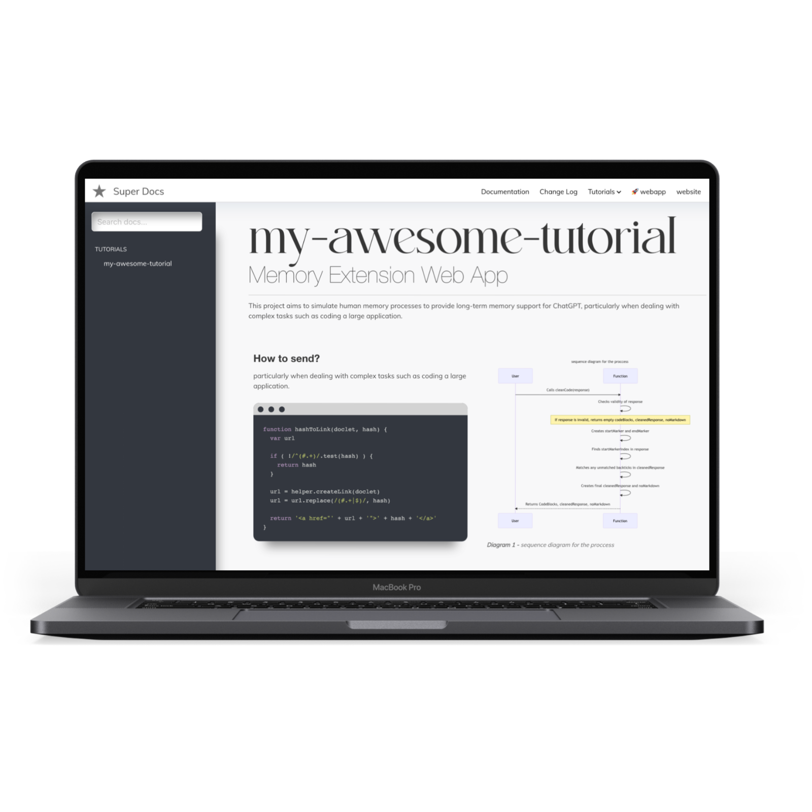

Super Docs theme for JsDocs
Documentation toolbox for your javascript / typescript projects based on JSDoc3 with @category and @optional plugins.
- Key features
- Example
- Installation
- Theme Usage
- TypeScript support
- @category plugin
- Customization
- Extras
- Setting up for the development
- Setting up the jsdoc in your project
- Automatically generate JSDocs before pushing to github
- License
- About sherifButt.co
Key features:
- Openapi Swagger documentation out of the box, with beautiful theme
- Mermaid integration for flowcharts, sequence diagrams and more
- markdown tutorial pages generator.
- Responsive design
This how it looks:

Example
Example documentation can be found here: https://sherifbutt.github.io/super-docs-documentation/
Installation
npm install --save-dev super-docs
Theme Usage
With command line
Assuming that you have jsdoc installed globally:
jsdoc your-documented-file.js -t ./node_modules/super-docs
With npm and configuration file
In your projects package.json file - add a new script:
"script": {
"docs": "jsdoc -c jsdoc.json"
}
in your jsdoc.json file, set the template:
"opts": {
"template": "node_modules/super-docs"
}
TypeScript support
super-docs has a plugin which allows you to generate documentation from your TypeScript codebase.
Usage
To use it update your jsdoc.json file
...
"tags": {
"allowUnknownTags": ["optional"] //or true
},
"plugins": [
"node_modules/super-docs/typescript"
],
"source": {
"includePattern": "\\.(jsx|js|ts|tsx)$",
},
...
And now you can run your jsdoc command and parse TypeScript files.
How it works?
It performs 4 operations:
- First of all it transpilers all .ts and .tsx files to .js, so that all comments used by you are treated as a regular JSDoc comments.
Furthermore it:
- Converts all your commented
typealiases to@typedef - Converts all your commented
interfacedefinitions to@interface, - Converts descriptions for your public, protected, static class members
so they can be printed by JSDoc automatically.
Examples
/**
* ActionRequest
* @memberof Action
* @alias ActionRequest
*/
export type ActionRequest = {
/**
* parameters passed in an URL
*/
params: {
/**
* Id of current resource
*/
resourceId: string;
/**
* Id of current record
*/
recordId?: string;
/**
* Name of an action
*/
action: string;
[key: string]: any;
};
}
is converted to:
/**
* ActionRequest'
* @memberof Action'
* @alias ActionRequest'
* @typedef {object} ActionRequest'
* @property {object} params parameters passed in an URL'
* @property {string} params.resourceId Id of current resource'
* @property {string} [params.recordId] Id of current record'
* @property {string} params.action Name of an action'
* @property {any} params.{...}'
*/
Also you can comment the interface in a similar fashion:
/**
* JSON representation of an Action
* @see Action
*/
export default interface ActionJSON {
/**
* Unique action name
*/
name: string;
/**
* Type of an action
*/
actionType: 'record' | 'resource' | Array<'record' | 'resource'>;
/**
* Action icon
*/
icon?: string;
/**
* Action label - visible on the frontend
*/
label: string;
/**
* Guarding message
*/
guard?: string;
/**
* If action should have a filter (for resource actions)
*/
showFilter: boolean;
/**
* Action component. When set to false action will be invoked immediately after clicking it,
* to put in another words: there wont be an action view
*/
component?: string | false | null;
}
or describe your class properties like that:
/**
* Class name
*/
class ClassName {
/**
* Some private member which WONT be in jsdoc (because it is private)
*/
private name: string
/**
* Some protected member which will go to the docs
*/
protected somethingIsA: number
/**
* And static member which will goes to the docs.
*/
static someStaticMember: number
public notCommentedWontBeInJSDoc: string
constructor(color: string) {}
}
@category plugin
super-docs also allows you to nest your documentation into categories and subcategories in the sidebar menu.
Usage
To add a plugin - update plugins section in your jsdoc.json file:
...
"tags": {
"allowUnknownTags": ["category"] //or true
},
"plugins": [
"node_modules/super-docs/category"
],
...
and then you can use @category and/or @subcategory tag in your code:
/**
* Class description
* @category Category
* @subcategory All
*/
class YourClass {
....
}
Customization
First of all, let me state that super-docs extends the default template. That is why default template parameters are also handled.
[BETA]: You must explicitly set the search option of the default template to true to enable search
To customize the super-docs pass options to templates['super-docs']. section in your jsdoc configuration file.
Example configuration file with settings for both default and super-docs templates:
{
"tags": {
"allowUnknownTags": ["category"]
},
"source": {
"include": ["./src"],
"includePattern": ".js$",
"excludePattern": "(node_modules/|docs)"
},
"plugins": [
"plugins/markdown",
"jsdoc-mermaid",
"node_modules/super-docs/category"
],
"opts": {
"encoding": "utf8",
"destination": "docs/",
"readme": "readme.md",
"recurse": true,
"verbose": true,
"tutorials": "./docs-src/tutorials",
"template": "super-docs"
},
"templates": {
"cleverLinks": false,
"monospaceLinks": false,
"search": true,
"default": {
"staticFiles": {
"include": [
"./docs-src/statics"
]
}
},
"super-docs": {
"name": "Sample Documentation",
"logo": "images/logo.png",
"title": "", // HTML title
"css": "style.css",
"trackingCode": "tracking-code-which-will-go-to-the-HEAD",
"hideGenerator": false,
"navLinks": [
{
"label": "Github",
"href": "https://github.com/sherifButt/admin-bro"
},
{
"label": "Example Application",
"href": "https://admin-bro-example-app-staging.herokuapp.com/admin"
}
]
}
}
}
Explanation of Key Fields
Sure, here's the information converted into a markdown table:
| Key Field | Explanation |
|---|---|
tags |
Specifies the handling of unknown tags in the documentation. In this case, all unknown tags are allowed. |
source |
Specifies the source files to be included in the documentation. It includes all JavaScript and TypeScript files in the project, excluding those in the node_modules directory. |
plugins |
Lists the plugins used in the documentation generation process. |
opts |
Specifies various options for the documentation generation, such as the encoding, destination directory, and whether to include subdirectories. |
templates |
Specifies the settings for the templates used in the documentation. This includes settings for search functionality, link styles, and static files to be included. |
opts.encoding |
Specifies the encoding type for the files. In this case, it is set to "utf8". |
opts.destination |
Specifies the output directory for the generated documentation. Here, it is set to "docs/". |
opts.recurse |
When set to true, allows the documentation generator to traverse subdirectories. |
opts.verbose |
When set to false, suppresses the logging of non-essential information during the documentation generation process. |
opts.template |
Specifies the directory of the template to be used for the documentation. Here, it is set to the current directory "./". |
opts.tutorials |
Specifies the directory of the tutorial files to be included in the documentation. Here, it is set to "./fixtures/tutorials". |
opts.readme |
Specifies the file to be used as the README in the documentation. Here, it is set to "./README.md". |
default.staticFiles.include |
Specifies the directory of static files to be included in the documentation. Here, it is set to "./docs/statics". |
favicon |
Specifies the path to the favicon file for the documentation. Here, it is set to "./images/favicon.png". |
super-docs.name |
Specifies the name for the "Super Docs" template. |
super-docs.logo |
Specifies the logo for the "Super Docs" template. |
super-docs.title |
Specifies the title for the "Super Docs" template. |
super-docs.css |
Specifies the CSS file for the "Super Docs" template. |
super-docs.hideGenerator |
When set to true, hides the documentation generator's information in the output documentation. |
super-docs.favicon |
Specifies the path to the favicon file for the "Super Docs" template. |
super-docs.faviconType |
Specifies the type of the favicon file for the "Super Docs" template. |
Please ensure that all paths and settings are correctly configured for your project's structure and requirements.
Extras
typedef(import(...))
super-docs also has one extra plugin for handling typescript'like types imports like (it has to be one-liner):
/** @typedef {import('./some-other-file').ExportedType} ExportedType */
It simply removes that from the code so JSDoc wont throw an error. In order to use it add this plugin to your plugins section:
"plugins": [
"node_modules/super-docs/typedef-import"
],
Setting up for the development
If you want to change the theme locally follow the steps:
- Clone the repo to the folder where you have the project:
cd your-project
git clone git@github.com:sherifButt/super-docs.git
or add it as a git submodule:
git submodule add git@github.com:sherifButt/super-docs.git
- Install the packages
cd super-docs
npm install
## or
yarn
- Within the super-docs folder run the gulp script. It will regenerate documentation every time you change something.
It supports following EVN variables:
DOCS_COMMAND- a command in your root repo which you use to generate documentation: i.e.DOCS_COMMAND='jsdoc -c jsdoc.json'ornpm run docsif you havedocscommand defined inpackage.jsonfileDOCS_OUTPUT- where your documentation is generated. It should point to the same folder your jsdoc--destinationconf. But make sure that it is relative to the path where you clonedsuper-docs.DOCS- list of folders from your original repo what you want to watch for changes. Separated by comma.
cd super-docs
DOCS_COMMAND='npm run docs' DOCS=../src/**/*,../config/**/* DOCS_OUTPUT=../docs cd super-docs && gulp
The script should launch the browser and refresh it whenever you change something in the template or in DOCS.
Setting up the jsdoc in your project
If you want to see how to setup jsdoc in your project - take a look at these brief tutorials:
- JSDoc - https://www.youtube.com/watch?v=Yl6WARA3IhQ
- super-docs and Mermaid: https://www.youtube.com/watch?v=UBMYogTzsBk
generate JSDocs before pushing to github
You can use Git hooks, specifically a pre-push hook, to automate the generation of JSDocs each time you push your changes. This will ensure that your documentation is always up to date with your latest changes. Git hooks are scripts that Git executes before or after events such as commit, push, and so forth.
Here's an example of how you could use a Git `pre-push` hook to generate your documentation:
First, navigate to the `.git/hooks` directory in your project. You will find several sample hooks. You'll need to create a new file called `pre-push` (with no file extension). Inside this file, put:
```bash
#!/bin/sh
jsdoc -c jsdoc.json
```
This script will automatically run before each `git push` command.
You will also need to give the `pre-push` file the appropriate permissions to allow it to be executed. You can do this with the following command:
```bash
chmod +x .git/hooks/pre-push
```
License
super-docs is Copyright © 2019 sherifButt.co. It is free software and may be redistributed under the terms specified in the LICENSE file - MIT.
About sherifButt.co
We're an open, friendly team that helps clients from all over the world to transform their businesses and create astonishing products.